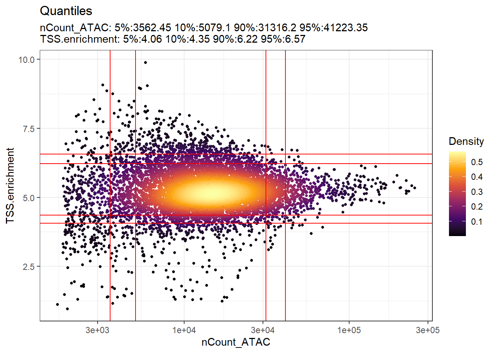
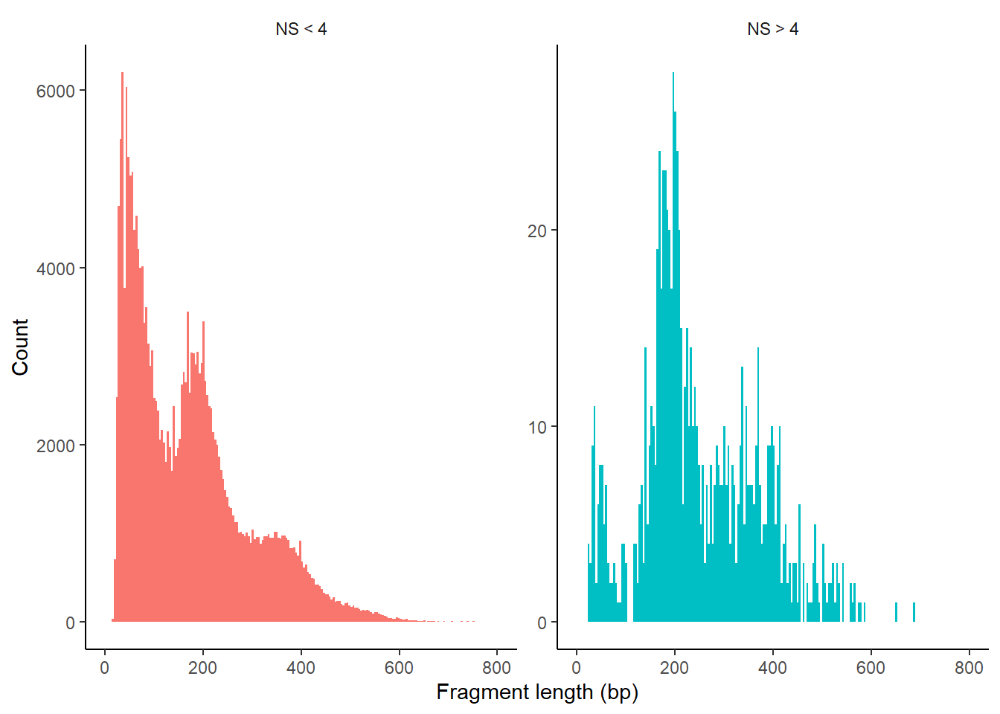
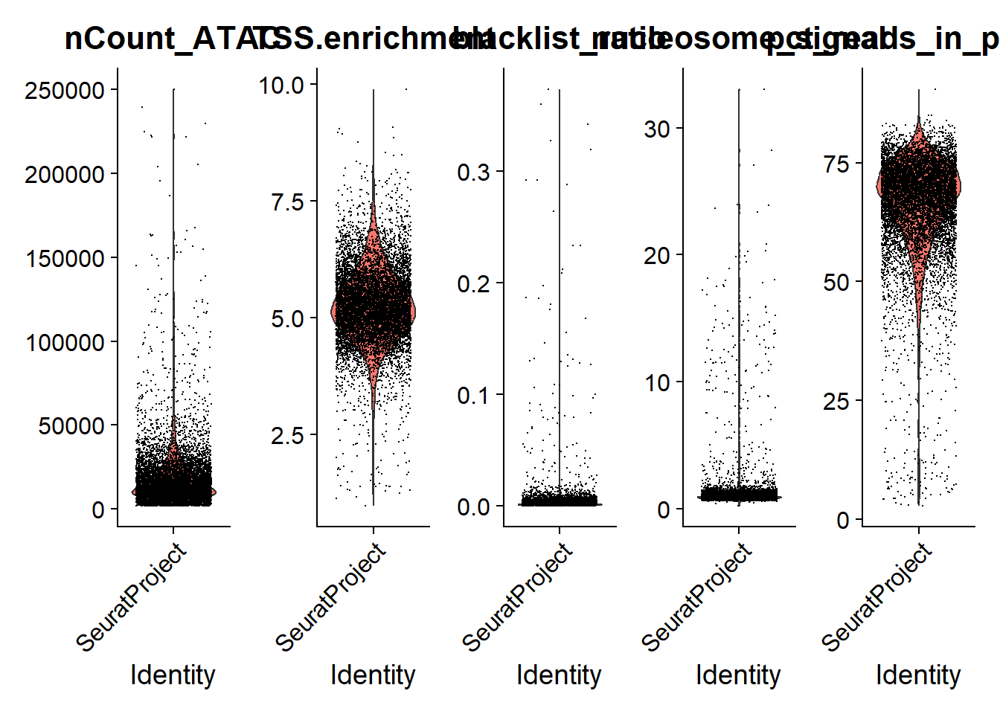
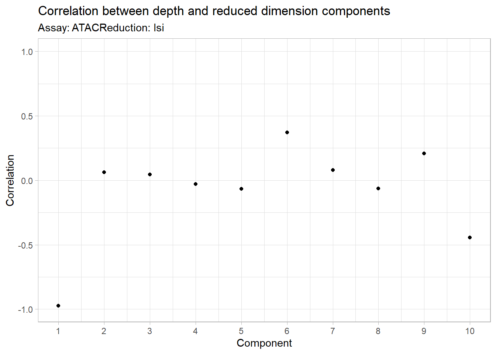
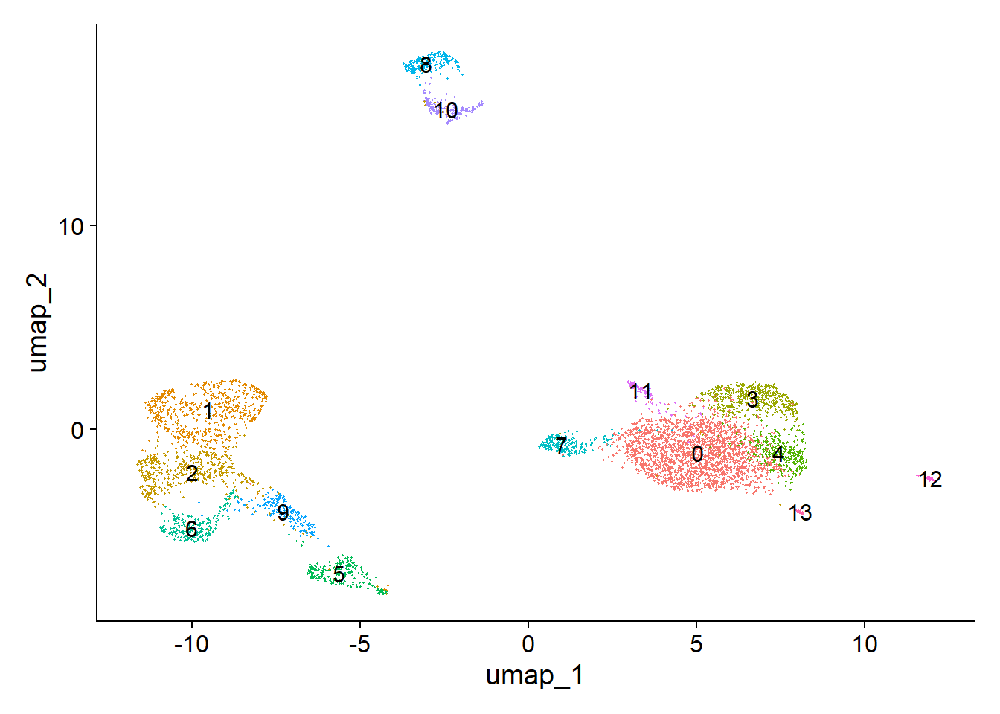

flowchart LR A(Import Data) --> B(Annotation) B --> C(Computing QC metrics) C --> D(Normalization and linear \ndimensional reduction) D --> E(Non-linear dimensional \nreduction and clustering)
3 Exercises
3.1 Dataset overview: 10k Peripheral Blood Mononuclear Cells (PBMCs) from a Healthy Donor
For this tutorial, we will be analyzing a single-cell ATAC-seq dataset of human peripheral blood mononuclear cells (PBMCs) provided by 10x Genomics. The following files are used in this course, all available through the 10x Genomics website:
The Raw data: Filtered peak barcode matrix.
The Metadata: Per-barcode fragment counts & metrics.
The fragments file: Barcoded and aligned fragment file.
The fragments file index: Fragments file index.
Pre-processing workflow
Exercise in Google Colab
- Create a copy of the Google colab notebook part 1 on your one drive.
- Run the exercise.
4 Complete results
what happen if we use all data?
4.1 📗 Step 1: Import Data
Code
library(Signac)
library(Seurat)
library(GenomicRanges) # genomic data manipulation
library(ggplot2) #vizualization
library(patchwork) # Vizualization
library(EnsDb.Hsapiens.v75) # human genome hg19
library(future) # parallelization in SignacSettings on my computer:
Code
# Obtain versions
cat("R version:", R.version$version.string, "\n")R version: R version 4.4.1 (2024-06-14 ucrt) Code
cat("Number of cores:", availableCores(), "\n")Number of cores: 8 Code
packageVersion("Signac")[1] '1.14.0'Code
# parallelization options
plan("multicore", workers = 8)
plan()multicore:
- args: function (..., workers = 8, envir = parent.frame())
- tweaked: TRUE
- call: plan("multicore", workers = 8)Code
# Increase the maximum memory usage
options(future.globals.maxSize = 14 * 1024^3) # para 14 GB de RAMNote that as of future version 1.14.0, forked processing is disabled when running in RStudio. To enable parallel computing in RStudio, you will need to select the “multisession” option.
4.1.1 Create ChromatinAssay
The ATAC-seq data is stored using a custom assay, the ChromatinAssay. This enables some specialized functions for analysing genomic single-cell assays such as scATAC-seq. By printing the assay we can see some of the additional information that can be contained in the ChromatinAssay, including motif information, gene annotations, and genome information.
Code
counts <- Read10X_h5(filename = "data/atac_v1_pbmc_10k_filtered_peak_bc_matrix.h5")
metadata <- read.csv(
file = "data/atac_v1_pbmc_10k_singlecell.csv",
header = TRUE,
row.names = 1
)
chrom_assay <- CreateChromatinAssay(
counts = counts,
sep = c(":", "-"),
genome = 'hg19', # EnsDb.Hsapiens.v75
fragments = "data/atac_v1_pbmc_10k_fragments.tsv.gz",
min.cells = 10,
min.features = 200
)Computing hashCode
pbmc <- CreateSeuratObject(
counts = chrom_assay,
assay = "ATAC",
meta.data = metadata
)Check global information
Code
pbmcAn object of class Seurat
87561 features across 8728 samples within 1 assay
Active assay: ATAC (87561 features, 0 variable features)
2 layers present: counts, dataCheck ATAC information
Code
pbmc[['ATAC']]ChromatinAssay data with 87561 features for 8728 cells
Variable features: 0
Genome: hg19
Annotation present: FALSE
Motifs present: FALSE
Fragment files: 1 We then remove the features that correspond to chromosome scaffolds e.g. (KI270713.1) or other sequences instead of the (22+2) standard chromosomes.
Code
peaks.keep <- seqnames(granges(pbmc)) %in% standardChromosomes(granges(pbmc))
pbmc <- pbmc[as.vector(peaks.keep), ]Check file:
87561 features across 8728 samples within 1 assay.
Code
dim(pbmc)[1] 87561 8728Code
str(pbmc)Formal class 'Seurat' [package "SeuratObject"] with 13 slots
..@ assays :List of 1
.. ..$ ATAC:Formal class 'ChromatinAssay' [package "Signac"] with 16 slots
.. .. .. ..@ ranges :Formal class 'GRanges' [package "GenomicRanges"] with 7 slots
.. .. .. .. .. ..@ seqnames :Formal class 'Rle' [package "S4Vectors"] with 4 slots
.. .. .. .. .. .. .. ..@ values : Factor w/ 24 levels "chr1","chr2",..: 1 2 3 4 5 6 7 8 9 10 ...
.. .. .. .. .. .. .. ..@ lengths : int [1:24] 8555 6858 5499 3515 4389 5269 4263 3677 3540 4137 ...
.. .. .. .. .. .. .. ..@ elementMetadata: NULL
.. .. .. .. .. .. .. ..@ metadata : list()
.. .. .. .. .. ..@ ranges :Formal class 'IRanges' [package "IRanges"] with 6 slots
.. .. .. .. .. .. .. ..@ start : int [1:87561] 565107 569174 713460 752422 762106 779589 793516 801120 804872 839520 ...
.. .. .. .. .. .. .. ..@ width : int [1:87561] 444 466 1364 617 1254 683 226 219 890 1604 ...
.. .. .. .. .. .. .. ..@ NAMES : NULL
.. .. .. .. .. .. .. ..@ elementType : chr "ANY"
.. .. .. .. .. .. .. ..@ elementMetadata: NULL
.. .. .. .. .. .. .. ..@ metadata : list()
.. .. .. .. .. ..@ strand :Formal class 'Rle' [package "S4Vectors"] with 4 slots
.. .. .. .. .. .. .. ..@ values : Factor w/ 3 levels "+","-","*": 3
.. .. .. .. .. .. .. ..@ lengths : int 87561
.. .. .. .. .. .. .. ..@ elementMetadata: NULL
.. .. .. .. .. .. .. ..@ metadata : list()
.. .. .. .. .. ..@ seqinfo :Formal class 'Seqinfo' [package "GenomeInfoDb"] with 4 slots
.. .. .. .. .. .. .. ..@ seqnames : chr [1:24] "chr1" "chr2" "chr3" "chr4" ...
.. .. .. .. .. .. .. ..@ seqlengths : int [1:24] NA NA NA NA NA NA NA NA NA NA ...
.. .. .. .. .. .. .. ..@ is_circular: logi [1:24] NA NA NA NA NA NA ...
.. .. .. .. .. .. .. ..@ genome : chr [1:24] NA NA NA NA ...
.. .. .. .. .. ..@ elementMetadata:Formal class 'DFrame' [package "S4Vectors"] with 6 slots
.. .. .. .. .. .. .. ..@ rownames : NULL
.. .. .. .. .. .. .. ..@ nrows : int 87561
.. .. .. .. .. .. .. ..@ elementType : chr "ANY"
.. .. .. .. .. .. .. ..@ elementMetadata: NULL
.. .. .. .. .. .. .. ..@ metadata : list()
.. .. .. .. .. .. .. ..@ listData : Named list()
.. .. .. .. .. ..@ elementType : chr "ANY"
.. .. .. .. .. ..@ metadata : list()
.. .. .. ..@ motifs : NULL
.. .. .. ..@ fragments :List of 1
.. .. .. .. ..$ :Formal class 'Fragment' [package "Signac"] with 3 slots
.. .. .. .. .. .. ..@ path : chr "C:\\Users\\ecoss\\Documents\\Respaldos\\Github_notes\\WCS_scATACseq_book\\data\\atac_v1_pbmc_10k_fragments.tsv.gz"
.. .. .. .. .. .. ..@ hash : chr [1:2] "8e03bd72e952a7da7c1cce52f3696e6e" "146e556e1311573593bd6cfa6efefcc1"
.. .. .. .. .. .. ..@ cells: Named chr [1:8728] "AAACGAAAGAGCGAAA-1" "AAACGAAAGAGTTTGA-1" "AAACGAAAGCGAGCTA-1" "AAACGAAAGGCTTCGC-1" ...
.. .. .. .. .. .. .. ..- attr(*, "names")= chr [1:8728] "AAACGAAAGAGCGAAA-1" "AAACGAAAGAGTTTGA-1" "AAACGAAAGCGAGCTA-1" "AAACGAAAGGCTTCGC-1" ...
.. .. .. ..@ seqinfo :Formal class 'Seqinfo' [package "GenomeInfoDb"] with 4 slots
.. .. .. .. .. ..@ seqnames : chr [1:298] "chr1" "chr2" "chr3" "chr4" ...
.. .. .. .. .. ..@ seqlengths : int [1:298] 249250621 243199373 198022430 191154276 180915260 171115067 159138663 146364022 141213431 135534747 ...
.. .. .. .. .. ..@ is_circular: logi [1:298] FALSE FALSE FALSE FALSE FALSE FALSE ...
.. .. .. .. .. ..@ genome : chr [1:298] "hg19" "hg19" "hg19" "hg19" ...
.. .. .. ..@ annotation : NULL
.. .. .. ..@ bias : NULL
.. .. .. ..@ positionEnrichment: list()
.. .. .. ..@ links :Formal class 'GRanges' [package "GenomicRanges"] with 7 slots
.. .. .. .. .. ..@ seqnames :Formal class 'Rle' [package "S4Vectors"] with 4 slots
.. .. .. .. .. .. .. ..@ values : Factor w/ 0 levels:
.. .. .. .. .. .. .. ..@ lengths : int(0)
.. .. .. .. .. .. .. ..@ elementMetadata: NULL
.. .. .. .. .. .. .. ..@ metadata : list()
.. .. .. .. .. ..@ ranges :Formal class 'IRanges' [package "IRanges"] with 6 slots
.. .. .. .. .. .. .. ..@ start : int(0)
.. .. .. .. .. .. .. ..@ width : int(0)
.. .. .. .. .. .. .. ..@ NAMES : NULL
.. .. .. .. .. .. .. ..@ elementType : chr "ANY"
.. .. .. .. .. .. .. ..@ elementMetadata: NULL
.. .. .. .. .. .. .. ..@ metadata : list()
.. .. .. .. .. ..@ strand :Formal class 'Rle' [package "S4Vectors"] with 4 slots
.. .. .. .. .. .. .. ..@ values : Factor w/ 3 levels "+","-","*":
.. .. .. .. .. .. .. ..@ lengths : int(0)
.. .. .. .. .. .. .. ..@ elementMetadata: NULL
.. .. .. .. .. .. .. ..@ metadata : list()
.. .. .. .. .. ..@ seqinfo :Formal class 'Seqinfo' [package "GenomeInfoDb"] with 4 slots
.. .. .. .. .. .. .. ..@ seqnames : chr(0)
.. .. .. .. .. .. .. ..@ seqlengths : int(0)
.. .. .. .. .. .. .. ..@ is_circular: logi(0)
.. .. .. .. .. .. .. ..@ genome : chr(0)
.. .. .. .. .. ..@ elementMetadata:Formal class 'DFrame' [package "S4Vectors"] with 6 slots
.. .. .. .. .. .. .. ..@ rownames : NULL
.. .. .. .. .. .. .. ..@ nrows : int 0
.. .. .. .. .. .. .. ..@ elementType : chr "ANY"
.. .. .. .. .. .. .. ..@ elementMetadata: NULL
.. .. .. .. .. .. .. ..@ metadata : list()
.. .. .. .. .. .. .. ..@ listData : Named list()
.. .. .. .. .. ..@ elementType : chr "ANY"
.. .. .. .. .. ..@ metadata : list()
.. .. .. ..@ counts :Formal class 'dgCMatrix' [package "Matrix"] with 6 slots
.. .. .. .. .. ..@ i : int [1:52681465] 31 74 83 116 134 147 153 166 175 178 ...
.. .. .. .. .. ..@ p : int [1:8729] 0 5546 12127 21340 51653 56574 61650 64340 73157 79801 ...
.. .. .. .. .. ..@ Dim : int [1:2] 87561 8728
.. .. .. .. .. ..@ Dimnames:List of 2
.. .. .. .. .. .. ..$ : chr [1:87561] "chr1-565107-565550" "chr1-569174-569639" "chr1-713460-714823" "chr1-752422-753038" ...
.. .. .. .. .. .. ..$ : chr [1:8728] "AAACGAAAGAGCGAAA-1" "AAACGAAAGAGTTTGA-1" "AAACGAAAGCGAGCTA-1" "AAACGAAAGGCTTCGC-1" ...
.. .. .. .. .. ..@ x : num [1:52681465] 2 2 2 1 2 2 2 6 2 2 ...
.. .. .. .. .. ..@ factors : list()
.. .. .. ..@ data :Formal class 'dgCMatrix' [package "Matrix"] with 6 slots
.. .. .. .. .. ..@ i : int [1:52681465] 31 74 83 116 134 147 153 166 175 178 ...
.. .. .. .. .. ..@ p : int [1:8729] 0 5546 12127 21340 51653 56574 61650 64340 73157 79801 ...
.. .. .. .. .. ..@ Dim : int [1:2] 87561 8728
.. .. .. .. .. ..@ Dimnames:List of 2
.. .. .. .. .. .. ..$ : chr [1:87561] "chr1-565107-565550" "chr1-569174-569639" "chr1-713460-714823" "chr1-752422-753038" ...
.. .. .. .. .. .. ..$ : chr [1:8728] "AAACGAAAGAGCGAAA-1" "AAACGAAAGAGTTTGA-1" "AAACGAAAGCGAGCTA-1" "AAACGAAAGGCTTCGC-1" ...
.. .. .. .. .. ..@ x : num [1:52681465] 2 2 2 1 2 2 2 6 2 2 ...
.. .. .. .. .. ..@ factors : list()
.. .. .. ..@ scale.data : num[0 , 0 ]
.. .. .. ..@ assay.orig : NULL
.. .. .. ..@ var.features : logi(0)
.. .. .. ..@ meta.features :'data.frame': 87561 obs. of 2 variables:
.. .. .. .. ..$ count : num [1:87561] 172 437 6807 864 4841 ...
.. .. .. .. ..$ percentile: num [1:87561] 0.274 0.535 0.92 0.691 0.891 ...
.. .. .. ..@ misc :List of 1
.. .. .. .. ..$ calcN: logi TRUE
.. .. .. ..@ key : chr "atac_"
..@ meta.data :'data.frame': 8728 obs. of 19 variables:
.. ..$ orig.ident : Factor w/ 1 level "SeuratProject": 1 1 1 1 1 1 1 1 1 1 ...
.. ..$ nCount_ATAC : num [1:8728] 13187 16069 28008 221734 11439 ...
.. ..$ nFeature_ATAC : int [1:8728] 5546 6581 9213 30313 4921 5076 2690 8817 6644 3632 ...
.. ..$ total : int [1:8728] 22965 21806 46233 288897 16103 266481 10753 31745 23136 14626 ...
.. ..$ duplicate : int [1:8728] 10872 9336 21197 99998 6751 45654 4760 14341 10210 5612 ...
.. ..$ chimeric : int [1:8728] 183 122 479 2830 104 3425 61 167 145 99 ...
.. ..$ unmapped : int [1:8728] 198 175 292 1512 120 1514 43 191 157 109 ...
.. ..$ lowmapq : int [1:8728] 1198 1050 2673 16347 867 41940 644 1465 1308 913 ...
.. ..$ mitochondrial : int [1:8728] 51 1 14 913 0 57 96 29 15 96 ...
.. ..$ passed_filters : int [1:8728] 10463 11122 21578 167297 8261 173891 5149 15552 11301 7797 ...
.. ..$ cell_id : chr [1:8728] "_cell_0" "_cell_1" "_cell_2" "_cell_3" ...
.. ..$ is__cell_barcode : int [1:8728] 1 1 1 1 1 1 1 1 1 1 ...
.. ..$ TSS_fragments : int [1:8728] 4157 4858 10696 86433 3784 14141 2637 6587 5136 3493 ...
.. ..$ DNase_sensitive_region_fragments: int [1:8728] 8537 9548 17420 137387 6973 78696 3973 13546 9636 6050 ...
.. ..$ enhancer_region_fragments : int [1:8728] 3079 3954 4332 32884 2509 11425 753 5745 3542 1394 ...
.. ..$ promoter_region_fragments : int [1:8728] 3249 3600 8763 70515 2987 1686 2289 4911 4019 2740 ...
.. ..$ on_target_fragments : int [1:8728] 8894 10034 18562 144918 7288 85168 4183 14115 10072 6346 ...
.. ..$ blacklist_region_fragments : int [1:8728] 6 10 22 300 4 2121 8 23 8 13 ...
.. ..$ peak_region_fragments : int [1:8728] 6796 8319 14333 113658 5879 7360 3220 11399 8215 4509 ...
..@ active.assay: chr "ATAC"
..@ active.ident: Factor w/ 1 level "SeuratProject": 1 1 1 1 1 1 1 1 1 1 ...
.. ..- attr(*, "names")= chr [1:8728] "AAACGAAAGAGCGAAA-1" "AAACGAAAGAGTTTGA-1" "AAACGAAAGCGAGCTA-1" "AAACGAAAGGCTTCGC-1" ...
..@ graphs : list()
..@ neighbors : list()
..@ reductions : list()
..@ images : list()
..@ project.name: chr "SeuratProject"
..@ misc : list()
..@ version :Classes 'package_version', 'numeric_version' hidden list of 1
.. ..$ : int [1:3] 5 0 2
..@ commands : list()
..@ tools : list()For example, we can call granges on a Seurat object with a ChromatinAssay set as the active assay (or on a ChromatinAssay) to see the genomic ranges associated with each feature in the object. See the object interaction vignette for more information about the ChromatinAssay class.
Code
granges(pbmc)GRanges object with 87561 ranges and 0 metadata columns:
seqnames ranges strand
<Rle> <IRanges> <Rle>
[1] chr1 565107-565550 *
[2] chr1 569174-569639 *
[3] chr1 713460-714823 *
[4] chr1 752422-753038 *
[5] chr1 762106-763359 *
... ... ... ...
[87557] chrY 58993392-58993760 *
[87558] chrY 58994571-58994823 *
[87559] chrY 58996352-58997331 *
[87560] chrY 59001782-59002175 *
[87561] chrY 59017143-59017246 *
-------
seqinfo: 24 sequences from an unspecified genome; no seqlengthsBarcodes:
Code
head(colnames(pbmc))[1] "AAACGAAAGAGCGAAA-1" "AAACGAAAGAGTTTGA-1" "AAACGAAAGCGAGCTA-1"
[4] "AAACGAAAGGCTTCGC-1" "AAACGAAAGTGCTGAG-1" "AAACGAACAAGGGTAC-1"Positions:
Code
head(rownames(pbmc))[1] "chr1-565107-565550" "chr1-569174-569639" "chr1-713460-714823"
[4] "chr1-752422-753038" "chr1-762106-763359" "chr1-779589-780271"4.2 ✒️ Step 2: Annotation
We can also add gene annotations to the pbmc object for the human genome. This will allow downstream functions to pull the gene annotation information directly from the object.
Before annotation
Code
pbmc@assays$ATAC@annotationNULL4.2.1 Get gene annotations for the peaks and add to the object
From the dataset summary, we can see that the reference package 10x Genomics used to perform the mapping was “hg19”, which corresponds to the Ensembl v75 (hg19) patch release.
Code
# extract gene annotations from EnsDb
annotations <- GetGRangesFromEnsDb(ensdb = EnsDb.Hsapiens.v75)
# change to UCSC style since the data was mapped to hg19
seqlevelsStyle(annotations) <- 'UCSC'
# add the gene information to the object
Annotation(pbmc) <- annotations
# check
head(seqlevels(pbmc))[1] "chr1" "chr2" "chr3" "chr4" "chr5" "chr6"After adding the gene annotation:
Code
pbmc@assays$ATAC@annotationGRanges object with 3072120 ranges and 5 metadata columns:
seqnames ranges strand | tx_id gene_name
<Rle> <IRanges> <Rle> | <character> <character>
ENSE00001489430 chrX 192989-193061 + | ENST00000399012 PLCXD1
ENSE00001536003 chrX 192991-193061 + | ENST00000484611 PLCXD1
ENSE00002160563 chrX 193020-193061 + | ENST00000430923 PLCXD1
ENSE00001750899 chrX 197722-197788 + | ENST00000445062 PLCXD1
ENSE00001489388 chrX 197859-198351 + | ENST00000381657 PLCXD1
... ... ... ... . ... ...
ENST00000361739 chrMT 7586-8269 + | ENST00000361739 MT-CO2
ENST00000361789 chrMT 14747-15887 + | ENST00000361789 MT-CYB
ENST00000361851 chrMT 8366-8572 + | ENST00000361851 MT-ATP8
ENST00000361899 chrMT 8527-9207 + | ENST00000361899 MT-ATP6
ENST00000362079 chrMT 9207-9990 + | ENST00000362079 MT-CO3
gene_id gene_biotype type
<character> <character> <factor>
ENSE00001489430 ENSG00000182378 protein_coding exon
ENSE00001536003 ENSG00000182378 protein_coding exon
ENSE00002160563 ENSG00000182378 protein_coding exon
ENSE00001750899 ENSG00000182378 protein_coding exon
ENSE00001489388 ENSG00000182378 protein_coding exon
... ... ... ...
ENST00000361739 ENSG00000198712 protein_coding cds
ENST00000361789 ENSG00000198727 protein_coding cds
ENST00000361851 ENSG00000228253 protein_coding cds
ENST00000361899 ENSG00000198899 protein_coding cds
ENST00000362079 ENSG00000198938 protein_coding cds
-------
seqinfo: 25 sequences (1 circular) from hg19 genome4.3 📕 Step 3: Computing QC metrics
We can now compute some QC metrics for the scATAC-seq experiment as the original tutorial. We currently suggest the following metrics below to assess data quality. As with scRNA-seq, the expected range of values for these parameters will vary depending on your biological system, cell viability, and other factors.
Calculate the strength of the nucleosome signal per cell using NucleosomeSignal(). Computes the ratio of fragments between 147 bp and 294 bp (mononucleosome) to fragments < 147 bp (nucleosome-free).
We can inspect the TSS enrichment scores by grouping the cells based on the score and plotting the accessibility signal over all TSS sites. Setting the `fast=TRUE` option in TSSEnrichment() will only compute the TSS enrichment score without storing the entire cell by position matrix of Tn5 insertion frequency for each cell, and can save memory.
Code
# compute nucleosome signal score per cell
pbmc <- NucleosomeSignal(object = pbmc)
# compute TSS enrichment score per cell
pbmc <- TSSEnrichment(object = pbmc)
# add fraction of reads in peaks
pbmc$pct_reads_in_peaks <- pbmc$peak_region_fragments / pbmc$passed_filters * 100
# add blacklist ratio
pbmc$blacklist_ratio <- pbmc$blacklist_region_fragments/pbmc$peak_region_fragments4.3.1 Impact of Sample Type on Fragment Yield and Sequencing Quality
Note
Scatterplot colored by point density: This plot shows the
log10(unique nuclear fragments)vs TSS enrichment score and indicates the thresholds used with dotted lines.Histogram: These plot shows the fragment size distribution.
The relationship between variables stored in the object metadata can be visualized using the DensityScatter() function. This can also be used to quickly find suitable cutoff values for different QC metrics by setting quantiles=TRUE:
Code
DensityScatter(pbmc, x = 'nCount_ATAC', y = 'TSS.enrichment', log_x = TRUE, quantiles = TRUE)
We can also look at the fragment length periodicity for all the cells, and group by cells with high or low nucleosomal signal strength. You can see that cells that are outliers for the mononucleosomal / nucleosome-free ratio (based on the plots above) have different nucleosomal banding patterns. The remaining cells exhibit a pattern that is typical for a successful ATAC-seq experiment.
4.3.2 Fragment size distribution
Code
pbmc$nucleosome_group <- ifelse(pbmc$nucleosome_signal > 4, 'NS > 4', 'NS < 4')
FragmentHistogram(object = pbmc, group.by = 'nucleosome_group')
We can plot the distribution of each QC metric separately using a violin plot:
Code
VlnPlot(
object = pbmc,
features = c('nCount_ATAC', 'TSS.enrichment', 'blacklist_ratio', 'nucleosome_signal', 'pct_reads_in_peaks'),
pt.size = 0.1,
ncol = 5
)
Finally we remove cells that are outliers for these QC metrics. The exact QC thresholds used will need to be adjusted according to your dataset.
Code
pbmc <- subset(
x = pbmc,
subset = nCount_ATAC > 3000 &
nCount_ATAC < 20000 &
pct_reads_in_peaks > 15 & # 15 % of the reads in the peaks
blacklist_ratio < 0.01 & # 1 % of the reads mapeaning in blacklist ratio
nucleosome_signal < 4 &
TSS.enrichment > 4
)
pbmcAn object of class Seurat
87561 features across 5628 samples within 1 assay
Active assay: ATAC (87561 features, 0 variable features)
2 layers present: counts, data used (Mb) gc trigger (Mb) max used (Mb)
Ncells 14747239 787.6 43780821 2338.2 34074492 1819.8
Vcells 300696555 2294.2 548983892 4188.5 548983887 4188.54.4 📘 Step 4: Normalization and linear dimensional reduction (LSI)
Code
pbmc <- RunTFIDF(pbmc)Performing TF-IDF normalizationWarning in RunTFIDF.default(object = GetAssayData(object = object, layer =
"counts"), : Some features contain 0 total countsCode
pbmc <- FindTopFeatures(pbmc, min.cutoff = 'q0')
pbmc <- RunSVD(pbmc)Running SVDScaling cell embeddings used (Mb) gc trigger (Mb) max used (Mb)
Ncells 14756544 788.1 43780821 2338.2 34074492 1819.8
Vcells 296883996 2265.1 548983892 4188.5 548983887 4188.5The first LSI component often captures sequencing depth (technical variation) rather than biological variation. If this is the case, the component should be removed from downstream analysis. We can assess the correlation between each LSI component and sequencing depth using the DepthCor() function:
Code
DepthCor(pbmc)
Here we see there is a very strong correlation between the first LSI component and the total number of counts for the cell. We will perform downstream steps without this component as we don’t want to group cells together based on their total sequencing depth, but rather by their patterns of accessibility at cell-type-specific peaks.
4.5 📙 Step 5: Non-linear dimensional reduction and clustering
Code
pbmc <- RunUMAP(object = pbmc, reduction = 'lsi', dims = 2:30)02:10:46 UMAP embedding parameters a = 0.9922 b = 1.11202:10:46 Read 5628 rows and found 29 numeric columns02:10:46 Using Annoy for neighbor search, n_neighbors = 3002:10:46 Building Annoy index with metric = cosine, n_trees = 500% 10 20 30 40 50 60 70 80 90 100%[----|----|----|----|----|----|----|----|----|----|**************************************************|
02:10:46 Writing NN index file to temp file C:\Users\ecoss\AppData\Local\Temp\Rtmpi4Xas7\file195c37a54711
02:10:46 Searching Annoy index using 8 threads, search_k = 3000
02:10:47 Annoy recall = 100%
02:10:48 Commencing smooth kNN distance calibration using 8 threads with target n_neighbors = 30
02:10:50 Initializing from normalized Laplacian + noise (using RSpectra)
02:10:50 Commencing optimization for 500 epochs, with 212950 positive edges
02:11:06 Optimization finishedCode
pbmc <- FindNeighbors(object = pbmc, reduction = 'lsi', dims = 2:30)Computing nearest neighbor graph
Computing SNNCode
pbmc <- FindClusters(object = pbmc, verbose = FALSE, algorithm = 3)
DimPlot(object = pbmc, label = TRUE) + NoLegend()
4.6 References
- Signac tutorial - Analyzing PBMC scATAC-seq (Signac tutorial)
- Signac tutorial - Analyzing PBMC scATAC-seq